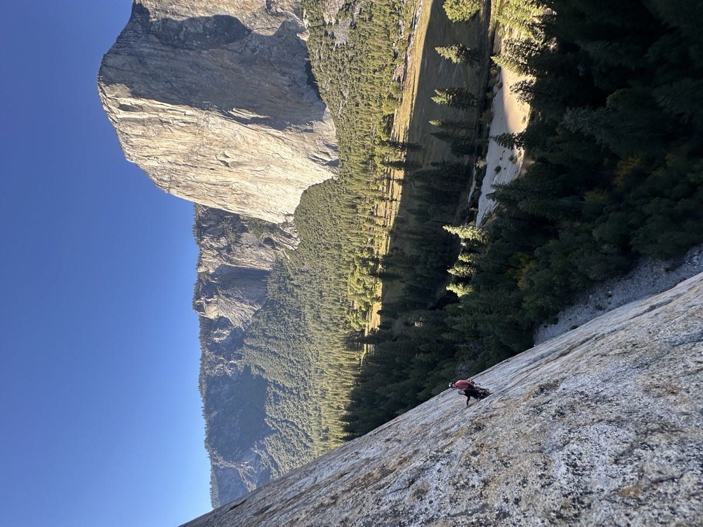
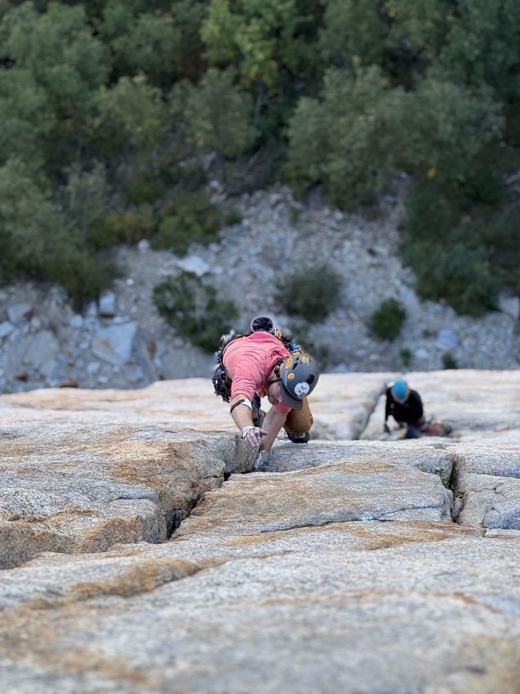
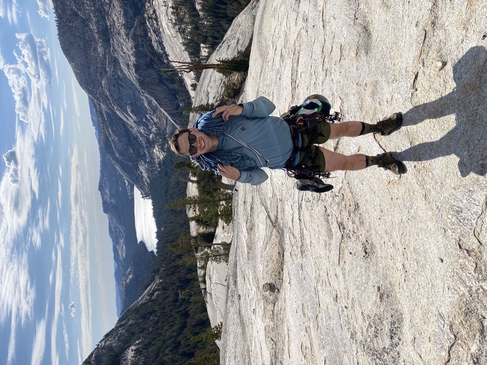

I'm an AI engineer who's worked across the data stack. Most recently, I built tools that help healthcare providers target and tailor interventions for folks living with chronic disease. The history of modern thought endlessly fascinates me, especially the genealogy of ideas we take for granted. I backcountry ski, trad climb, and bike tour and am currently on a sabbatical doing all three!

Personal Projects
- Sprig: Aggregates and intelligently categorizes spending for better budgeting.
- BookClawb: Conversationally quizzes about books from a Goodreads shelf.
- Mosaic: Assembles personal data into a dashboard for weekly introspection.
- SavvySuds: Recommends beer using trading behavior from users of The Beer Exchange.
Favorite Books
- Hero of Two Worlds by Mike Duncan: Lafayette is proof that you can be both great and good
- Triumph of the City by Edward L. Glaeser: Cities are an ingenuity engine but we have to design incentives that enable them to flourish, not wither
- The Dream Machine by M. Mitchell Waldrop: A shared dream of human-computer symbiosis rallied teams of brilliant misfits to invent the networked computer
- Stories of Your Life and Others by Ted Chiang: Runaway intelligence, linguistics, theology, neurology - these short stories are the very best of science fiction
- AI Engineering by Chip Huyen: You can't trust your fancy AI system without thoughtful evaluations
- Conquerors by Roger Crowley: Tales of bravery and ignorance from the Age of Exploration
- Deng Xiaoping and the Transformation of China by Ezra F. Vogel: You can't understand modern China without learning about Deng
- Why the West Rules - for Now by Ian Morris: A surprisingly quantitative history of the rise and fall of civilizations
Getting Outside

